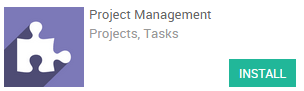

一家提供服务的公司经常会处理在项目实施过程中遇到的问题。这些问题必须尽快跟进和解决以便确保项目的交付和客户满意。
例如，作为一家提供软件服务的IT公司，你可以跟客户邮件处理技术问题。YuanCloud提供了这项功能，她可以在收到客户需要支持的邮件后，自动匹配到相应的项目上并生成任务。这样的话，问题就会分派给对应的人员来尽快解决。
配置
下面的配置要求能用项目来提供支持。你需要安装 项目管理 和 问题追踪 模块。
创建项目
第一步是为了配置问题管理系统，需要建立一个项目来与这些投诉相关联。我们可以简单地从创建一个“支持项目”开始。进入项目菜单仪表盘，创建并命名为“支持”。勾选“问题”选项框，如果你想给给这些问题标上客户，也可以在这里重命名 （例如“Bugs”或者“例子”）。因为问题是面向客户的任务，你可能需要设置“隐私/可见” （这样你的客户就能够在他界面跟踪他的投诉了）。
注解
如果这个项目是用来处理客户问题，你可以把它跟客户相关联。

邀请关注
问题一旦被创，你就可以决定通知到你的员工。在“聊天室” （屏幕下方），你可以看到两个按钮“加入”（绿色）“不加入”（白色）。点击第一个就可以收到私人通知，第二个可以添加其他员工作为项目的使用者。

配置工作流
你可以根据你的工作流来个性化你的项目状态，通过创建新栏目。在”看板“里面，你可以添加新的项目状态。如果你想更改状态的顺序，你只需要通过拖拉的动作即可。同时你也可以修改，隐藏你想要隐藏的状态。

根据邮件生成问题
当你的项目设置完毕后并保存，你就可以在你的仪表盘上看到它。一个基于这个项目的邮件地址自动生成，并以这个项目的名字为前缀。

注解
如果你没法在这个项目上看到相对应的地址，你可以去“设置”里面设置域名，然后回到“项目”界面，这时你就可以看到以你项目名字为前缀的邮箱地址。
每当客户往这个邮箱发送邮件，新的问题就会自动创建。